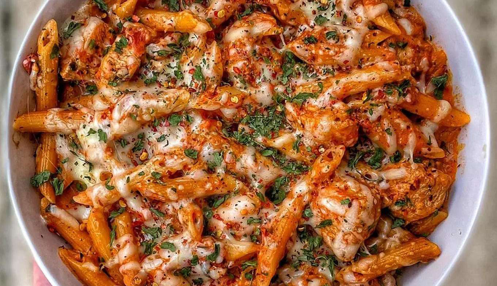

Creamy Nandos Pasta
Ingredients
- 70 g Diced Raw Chicken Breast (50g cooked)
- 80 g San Remo Pasta Pro
- 35 g Pasta Sauce
- 60 g Low Fat Cottage Cheese
- 15 ml Nandos Peri Hot Sauce (or any hot sauce)
- Parsley Flakes, Cajun Seasoning,
- Oregano, Nandos Peri Seasoning (or seasonings of choice)
Instructions
- Season chicken lightly with paprika & Nandos peri peri seasoning.
- Cook chicken in pan and set aside
- Cook 80g of protein pasta (as per instructions on the packaging)
- In a blender cup add 35g of pasta sauce, 60g of low fat cottage cheese, 1 tbsp of Nandos peri peri hot sauce, 1/2 cup of pasta water, parsley flakes, cajun seasoning & oregano
- Blend it together & set the cup aside for now.
- Once the pasta is cooked strain out the pasta water then add the pasta to a bowl with the blended sauce & mix everything together.
- Pour the pasta onto a plate & add the cooked chicken breast on top & enjoy!
Source PDF page 24